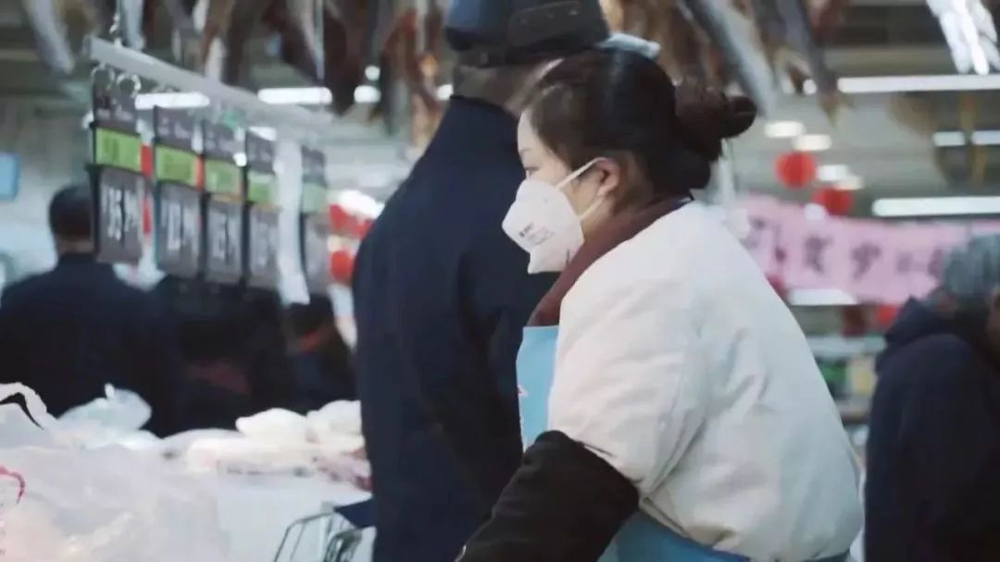
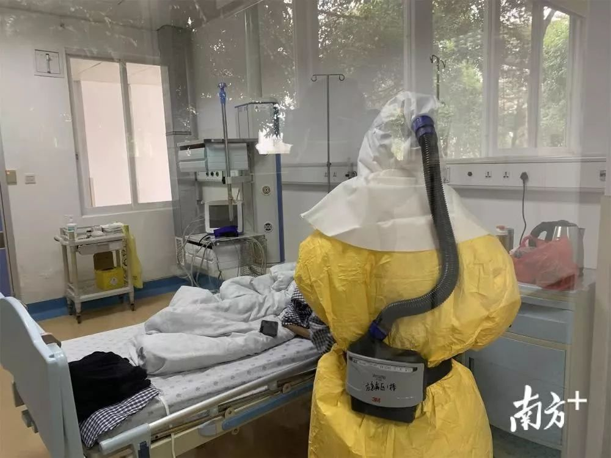
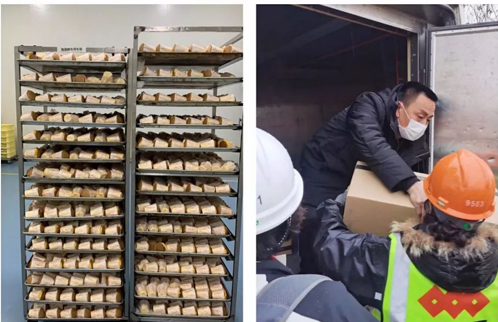

口述实录｜疫情席卷下，一个普通武汉市民的30天心路历程
原文链接 备份链接 我住在汉口，是这次疫情的重灾区。那个被查出疫情源头的华南海鲜市场，就在火车站对面，离我家大概20公里。我希望疫情早日结束，对我们国家的经济影响小一些，所有人都能够平安和健康。 口述 | 小 玲 整理 | 沈 林 我叫小 …

和老高一样，我们都等待着这一天，作为一名在武汉打拼的普通市民，我爱这座城市，希望武汉好起来，希望我的故事能带给你们力量。
口述 | 陈 璇
整理 | 竹 里
我叫陈璇，今年48岁，湖北咸宁市嘉鱼县人，2013年，我和老高从奋斗了17年的中山市，回到了湖北家乡，我在武汉做烘焙工作，老高在嘉鱼县，我们还有一个23岁的儿子，目前在中山某大学攻读硕士研究生。一年到头，一家人团聚的次数很少，今年春节，我本打算开车和老高一起到中山过个团圆年，但事情在1月21日发生了转折。
1月20日上午，关于新型冠状肺炎的新闻开始陆续在手机上出现，当时武汉街上的市民似乎并没有当回事，没有几个戴口罩的，但我心里有点忐忑。在老高从嘉鱼来武汉之前，我再三嘱咐他：一定要戴口罩，一定要戴口罩。但和我预想的一样，倔强的老高一点都不在乎，就这样“光秃秃”地回家了。
21日早上我们出发前往中山，当时武汉还没有封城，一路上，同事和朋友纷纷发信息给我说，他们都选择居家隔离观察，并叮嘱我们一定要戴好口罩，到了中山不要乱跑。此时我们防范意识已经很强，一路上都戴着口罩，未曾取下，但这时候，老高开始有点低烧，体温大概在37.2摄氏度左右，我开始有些慌：万一感染了咋办？

武汉超市卖场戴口罩的售货员
老高安慰我说，没事，也许是普通感冒。虽然嘴上这么说，但在见儿子之前，我俩都不约而同地多戴了层N95的口罩。儿子知道这个情况后，第一时间送我们去了医院，并主动告知医生说，我们是来自湖北，看是否需要采取措施。结果是幸运的，去了普通门诊和发热门诊测量体温都是36.7，医生建议居家观察。
一直到大年三十老高都未曾再发烧，但因为老高之前有过发热，为了安全起见，我们一家三口仍然不敢松懈，平时除了吃饭喝水都戴着口罩，餐具全部分开，吃饭用公筷，家里所有手接触点全部擦拭消毒。大年三十那天，我看到小区物业发朋友圈要求业主上报武汉人员信息，我们主动上报并登记了人员信息。
当天下午，市疾控中心的人来了，量了体温，配发了口罩，叮嘱居家隔离。1月28日，老高再次发烧，还伴随着拉肚子、呕吐，我们赶紧去中医医院检查，并说明了近几天的情况。医生拍了CT说肺部有些问题，疑似但并未确诊，建议隔离，后转入中山市第二医院隔离治疗。老高被隔离了，我有些慌，但在儿子面前还是要表现镇定，回到家后，我把老高接触过的所有东西全部消毒了一遍。

老高被隔离的医院中山市第二医院 图 | 南方+
睡前，儿子特意嘱咐，要求我们的房门都开着，有不舒服就互相照顾。第二天醒来，医院传来了两个好消息。一个是我和儿子的结果都没问题，但医生说需要请示专家，看如何防护。另一个是，在医生的悉心照顾下，老高的烧已经退了。在居家的这几天，我们基本不外出，吃饭在家解决，买菜、倒垃圾等需求请求物业帮忙。
1月30日，市疾控中心打来电话说，疑似病例的亲密接触者需进行隔离，所有的费用全部由政府负担，让我们准备下。这下，我心里有底了，悬着的心终于可以稍稍放松下，和儿子收拾好行李，一起上了救护车。没想到，第一次坐救护车，是这样的情景。
到了定点酒店，工作人员穿戴防护服、戴着护目镜，然而态度非常好。第一次被别人用另类的眼光对待，虽然不太适应，但特别能理解。这个酒店规模很大，环境不错，我和儿子分别被隔离在一个单人间和一个双人间，酒店工作人员每日定点送三餐，垃圾定点收取。早餐有瘦肉粥、包子、稀饭、油条，午餐、晚餐还有中山当地的肠粉，甚至十几块钱一斤的荷兰豆、炒腊肉也有。

陈璇被隔离的酒店房间 图 | 受访对象提供
防疫人员也非常负责，每天上门两次测量体温，目前都很正常。一个漂泊在他乡的湖北人，在这个特殊时期，能得到政府温暖的关怀，非常感动。而远在千里之外，我的同事们，也正在为武汉一线的医护人员尽一份力。自从各区150家烘焙店停业后，他们每天轮流自发地做尽可能多的面包送往武汉各大医院。目前，已经和武汉市九医院、武汉市八医院、汉口医院等16家医院沟通好配送事宜，其他援助医院也在持续对接中。

陈璇的同事每天免费提供面包到武汉一线医院 图 | 受访对象提供
今天是老高隔离的第六天，我和儿子隔离的第四天，早上在群里和他们视频，儿子已将情况报告给学校，每天看书、练吉他，生活充实；老高入院后，也从开始的乏力、食欲不振，到现在胃口大好，食欲大增，他还打趣地鼓励起我来说：“等到我出院了，你可要做一桌拿手好菜给我吃啊，我们还要一起跑步锻炼身体呢……”
和老高一样，我们都等待着这一天，作为一名在武汉打拼的普通市民，我爱这座城市，希望武汉好起来，希望我的故事能带给你们力量。
征集令
《新民周刊》现面向全国征集新冠肺炎采访对象和真实故事：
如果你是参与抗击新冠肺炎疫情的医护人员或其家属，我们希望聆听你的“战疫”故事，也希望传达你的诉求。
如果你是确诊、疑似患者本人或家属，我们希望了解你和家人如何“抗疫”的过程，让外界了解你的真实经历。
如果你是疫情严重地区的普通市民，我们希望展现你的乐观，并倾听你所需的帮助。
如果你是公共服务人员或各类捐助者，我们希望看到你的“最美逆行”，记录下你的无私。
……
抗击新冠肺炎疫情，我们诚征对疫情了解的社会各界人士，提供相关线索，说出你的故事，让我们用新闻留存这一切。
《新民周刊》新冠肺炎线索征集值班编辑联系方式（添加时请简要自我介绍）：
周一：应 琛 微信号：paulineying0127
周二：金 姬 微信号：gepetta
周三：黄 祺 微信号：wxid_bf5mudid7oz322
周四：周 洁 微信号：asyouasyou
周五：孔冰欣 微信号：kbx875055141
周六：吴 雪 微信号：shyshine1105
周日：姜浩峰 微信号：jianggeladandong
新闻是历史的底稿，你们是历史的见证者。期待你的故事、你的线索！

▼
大家还都在看这些
▼
转载请在评论区留言，获得授权！
转载时，须注明作者、出处和微信号


原文链接 备份链接 我住在汉口，是这次疫情的重灾区。那个被查出疫情源头的华南海鲜市场，就在火车站对面，离我家大概20公里。我希望疫情早日结束，对我们国家的经济影响小一些，所有人都能够平安和健康。 口述 | 小 玲 整理 | 沈 林 我叫小 …
原文链接 备份链接 封城第三天，小雨连绵，潮湿阴冷。这两天都没出门，通知跨江交通封停，汉口汉阳和武昌开始隔离，分开管控，早上站在窗边，十五分钟，路上没有一辆轿车，像以前举办马拉松实行交通管控，全程封路，中途驶过一个蓝衣外卖员，看着像饿了么 …
原文链接 备份链接 这名医生担心疫情在黄冈下面的县市地区进一步扩散。「现在所有人都把目光放在武汉，少有人注意到周边地区。这些地区的医疗物资本来就不足，要是没人关注的话，就会变成第二个武汉。」 文｜****苏东 编辑｜**** …
原文链接 备份链接 《战疫口述记》，是燃财经在新型冠状病毒肺炎期间推出的特别栏目，记录疫情亲历者的观察和感受。本文为第6篇，查看前5篇请点击《我和公司都快熬不住了》《节后返京，太太太南了》《我的“流浪”春节》《农村这样防肺炎》《我在武汉 …
原文链接 备份链接 今天，火神山医院正式交付。9天时间，可容纳1000张床位的医院在武汉落成，参照非典期间北京小汤山医院模式，专门收治新型冠状病毒肺炎患者。在医院床位紧缺的情况之下，大家对火神山和雷神山给予了期望，而实际效果如何，能多大 …